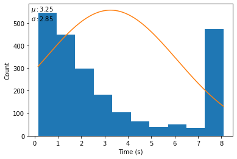

Problems¶
Note
Evaluation runtimes are measured on a Intel(R) Xeon(R) Gold 6148 CPU @ 2.40GHz CPU, using random search.
Windmill Wake Simulator¶
- bibtex
floris2020- repository
- parameters
- -n
The number of windmills to be placed. (default: 3)
- -w
The width of the area in which the windmills are to be placed. (default: 1000)
- -h
The height of the area in which the windmills are to be placed. (default: 1000)
- --wind-seed
The random seed used for generating the distribution and strength of the wind. (default: 0)
- dimensionality
\(2n\)
- description
…
Electrostatic Precipitator*¶
HPO / XGBoost¶
- parameters
- --folder
The folder containing the unpacked files of the Steel Plates Faults dataset. (required)
- dataset
Dataset provided by Semeion, Research Center of Sciences of Communication, Via Sersale 117, 00128, Rome, Italy. www.semeion.it
- dimensionality
\(135\)
- runtime
- 
- parameters
- --time-limit
The time limit for a single evaluation of the objective function in seconds. (default: 8) TODO: Setting this parameter still needs to be implemented.
Important
The default time limit is based on a Intel(R) Xeon(R) Gold 6148 CPU @ 2.40GHz, adjust accordingly to hardware used.
- description
…